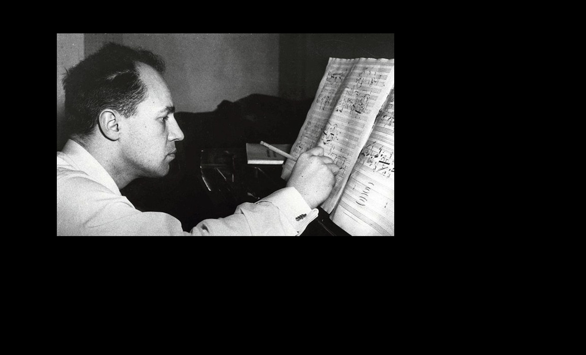

-
La musica y el Hombre
Universidad Iberoamericana
Otono 2017
Edson Neri Jimenez
-
La musica en la historia del hombre
La musica surge de la necesidad del ser humano (consciente) de comunicarse con los demas
-
Musica Prehistorica
No hay un registro historico que nos indique, a ciencia cierta, cuando se empezo a crear musica como tal pero las hipotesis sugieren que desde que el hombre es consciente de su inteligencia ha hecho musica. La primeras canciones seguramente estaba compuestas por lo sonidos mas basicos, como sonidos producidos con la boca, al golpear alguna parte de su cuerpo, al chocar dos objetos...
-

La musica en las grandes culturas antiguas
Dentro de las grandes culturas tanto euroasiaticas la musica tiene una carga religiiosa, siendo fundamenteal en la comunciaion con seres divinos. El vestigio mas antiguo de la relacion entra la musica y el hombre del que se tenga conocimiento pertenece a la cultura egipcia, que consideraba a Osiris el Dios de la musica. Algo que tiene en comun la musica de las grandes culturas es la carencia de escritura musical, la musica se transmitia por tradicion oral. Aunque de la cultura griega se tienen registro de algo que parece estritura musical es ilegible para nosotros. Debido a esto lo unico que podemos hacer es intentar recrear la musica pero no sabes con exactitud como sonaba en esos timepos.
-

La musica en las grandes culturas antiguas
Aunque no coinciden en el tiempo, las culturas prehispanicas tinene coincidencias muy marcadas en su cosmovision y el papel predominante de la musica en su relacion con los Dioses. Estas culturas construyeron lugares especificamente para venerar a sus deidades con rituales con fuerte carga musical. Como ejemplo encontramos el Rito Azteca para que el Sol venciera a la oscuridad. Dentro de estas culturas la importancia de la musica era tal que los encargados de ella formaba parte de una clase social privilegiada. Al igual que en las culturas euroasiaticas las musica se transmite por tradicion oral debido a la falta de escritura musical. Curiosamente dentro de la musica prehispanica no hay vestigios de instrumentos de cuerdas, solo se han encontrado instrumentos de percusion como el huehuetl o el tepozantli e instrumentos de viento como la ocarina
-

Musica sacra
La musica tuvo gran importancia en el desarrollo y expansion del cristianismo. La musica sacra surge en la comunidades cristianas que pensaban que cantar oraciones en lugar de solo recitarlas seria de mayor agrado para Dios. La musica cristiana omite la danza y el uso de instrumentos (hasta el siglo XI que introduce el organo).
Caracteriticas:
Musica vocal Voz masculina (posteriormente coros masculinos, y en el siglo VII voz femenina y coros infantiles) Se cantaba en Latin Predominan los salmos Cantan, en su mayoria, los monjes Modal. Sin reglas, los cambios son a criterio del cantante Dios es el unico compositor -

Grandes ideas que no se llevan acabo
Con la rapida expansino del cristianismo, se volvio importantisimo documentar y transmitir los cantos sacros. Existe registro que San Ambrosio intento hacer una recopilacion de los cantos sacros sin embargo nunca concreto dicha obra.
-

Papa Gregorio I
Debido a la creciente necesidad de cantantes y la preservacion de los cantos sacros debido a la expansion del cristianismo el Papa Gregorio I escribio 3 grandes libros: Usualis, Antifonario y Gradual Romano. En estos libros no se encuentran signos de escritura musical, solo textos. Ademas se le atribuye la creacion de la Schola Catonrum, la primera escuela de canto. Al canto sacro posteriormente se le terminaria llamando canto gregoriano debido a los grandes aportes del Papa Gregorio I
-

Primeros signos musicales
Aparecen los primeros signos musicales en los textos que se cantaban:
Punctum: Sonido un poco mas grave
Virga: Sonido un poco mas agudo -

Notacion neumatica
Se crea esta notacion debido a que los signos que representaban los sonidos se llamaron neumas.
-

Guido de Arezzo
da nombre a los sonidos basandos en un poema de San Juan UT, RE, MI, FA, SOL, LA
A Guido de Arezzo se le atribuye la inclusion de la segunda, tercera y cuarta linea del tetagrama
-

Se fija la clave de Sol
-

Dame el SI
Anselmo de Flandes agrega el septimo sonido que nombro SI
Tambien se agrega la 5ta linea y nace el pentragrama
La polifonia alcanza su maximo esplendor, influenciada por el pensamiento antropocentrico del hombre renacentista.
El musico polifonico mas importante fue Giovanni Pierluigi mejor conocido como Palestrina de quien se registran 950 obras.
-

Renombrar
Juan Batista Doni cambia el UT por DO solo por que era mas facil cantar la nota con DO
-

Renacimiento - Barroco
La Camareta Florentina (un grupo de eruditos de la epoca) decide regresar el canto a una solo linea musical, acompanada de instrumentos y actuacion, dando a luz a la opera, como contra peso al motete y madrigral que eran composiciones polifonicas con gran cantidad de lineas musicales dificiles de entender. En la opera lo mas importante fue el canto, dejando en segundo plano lo instrumental
Los temas representados son lo sagrado, el ser humano y el mito griego, siendo, el ultimo, predominante
La opera mas antigua es Dafne o La metamorfosis de Ovidio del italiano Jacobo Peri
La opera con partitura mas antigua es Orfeo y Euridice de Claudio de Monteverdi, quien es el primero en establecer las reglas de armonia, lo que dio origen a la musica tonal
-

Musica Barroca
Se inicia la escritura de musica en partituras para ser interpretada exclusivamente por instrumentos. Y nace asi la musica instrumental que es el gran legado del Barroco
Las principales formas instrumentales barrocas son:
Sonata
Concierto
Concierto grosso
Suite
Fuga
Destacan musicos como Antonio Vivaldi, Johann Sebastian Bach y Georg Friederich Haendel
-

Antonio Vivaldi
Nacido en Venecia en 1675 y fallecio en 1741
Fue sacerdote y director de la Catedral de San Marcos
Su obra maestra "Las cuatro estaciones" son 12 movimientos dividos en 4 concientros. Primavera, Verano, Otono e Invierno -

Georg Friederich Haendel
1685 - 1759
Aleman de talento nato. En su momento fue el musico barroco mas grande.
En su musica se encuetra la severidad alemana, la gracia italiana y la majestuosidad inglesa.
Dentro de su obra destacan El Mesias y Musica Acuatica 43 operas, 22 oratorios, 25 sonatas, gran cantidad de conciertos y obras para organo.
-

Johann Sebastian Bach
Nacio en Alemania en 1685. En su arbol genealogico encontramos muchos musicos
Tiene 3 etapas como compositor:
1708 - 1717 En Weimar. Predominan composiciones para organo.
1717 - 1723 En Coethen. Predominan composiciones instrumentales.
1723 - 1750 En Leipzig. Predomina la composicion religiosa.
Se registran mas de 2000 composiciones suyas. Aunque con seguridad esta cifra fue rebasada con facilidad, pues cada domingo realizaba una composicion para la iglesia y trabajo mas de 30 anos ahi.
Se caso dos veces y con su primera esposa engendro a Wilhelm Friedemann Bach y Carl Philipp Emanuel Bach quienes tambien fueron musicos.
"Fe en Dios, amor a la familia y amor a la musica."
Su obra religiosa asciende a las 250 composiciones, oratorios, misas, y pasiones. Destaca La Pasion Segun San Mateo
El resto de su obra esta compuesta por sonatas, conciertos y suites ademas de 3 libros.
Mendelsshon fue el musico romantico que despues de 100 anos de la muerte de Bach retoma su obra y logra despertar el interes, sobre todo de los expertos, por la musica de Bach
En reconocimiento a su gran obra el periodo barro en la musica se cierra en 1750, ano de su muerte.
-

Invencion del piano
Aunque el piano (entonces conocido como pianoforte) es inventado en 1711 por Bartolomeo Cristofori, y posteriormente perfeccionado por los hermanos Silbermann, no fue utilizado por los musicos del Barroco pues consideraban que emitian sonidos de poca nitidez. Fue Beethoven uno de los primeros en utilizarlo y desde entonces se ha convertido en el instrumento preferido de los compositores.
-

Musica Clasica
Periodo comprendido entre 1770 y 1825
Durante este periodo se privilegio la dimension racional del hombre sobre la afectiva por lo que las formas barrocas ganan complejidad.
Se establecen reglas a seguir para componer.
La sinfonia clasica tiene 4 movimientos ordenados: Allegro, Andante, Minue, Alegro
Los musicos mas representativos de este periodo son: Joseph Haydn y Wolfdang Amadeus Mozart
Durante este periodo la capital de la musica es Viena -

Joseph Haydn (1732 - 1809)
Nacido en Viena y fue conocido como "El Padre de la Sinfonia" debido a su gran produccion de sinfonias o "Papa Haydn" pues era muy querido por los musicos de la epoca.
Maestro de Mozart y Beethoven.
Compuso un total de 104 sinfonias. Destaca la sinfonia 22 "El filosofo".
Su obra completa suma mas de 1000 composiciones. -

Wolfgang Amadeus Mozart (1756 - 1791)
Nacio en Salzburgo, Austria.
Es considerado un nino prodigio de la musica pues a los 7 anos ya habia compuesto 4 sonatas, su primera sinfonia a los 8 y su primera opera "La Finita Semplice" a las 12. Alcanzo su maximo como musico a los 29 anos.
Se mudo a Viena y trabajo para la corte en busca del puesto de Director de Musica de la Corte, que se le otorgaba al mejor musico. Sin embargo, nunca lo logro.
"La flauta magica" fue su ultima opera y se estreno en 1791. Y su ultima obra, que quedaria sin concluir cuando muere, es Requiem (misa de difunto) que fue terminada por su alumno Franz Susmayr.
Su obra consta de 626 composiciones divididas en 20 operas, 49 sinfonias, 32 conciertos (25 para piano y 7 para violin), 30 cuartetos, 17 sonatas, Quintetos, trios, serenatas, danzas, divertimientos y un Requiem. -

B de Beethoven (1770 - 1827)
Es la transicion entre los periodos Clasico y Romantico
Nacio en Bonn y se traslado a Viena.
Fue alumno de Haydn e indirectamente de Johann Sebastian Bach.
Cuando tenia 27 anos empezo a perder el sentido del oido y a los 50 anos lo pierde totalmente.
Tres anos despues de perder completamente el oido, compone su obra maestra la Sinfonia No. 9, Coral.
Su produccion no es tan prolifica como la de otros musicos. Cuenta 100 obras, en las que se encuetran 9 sinfonias, la opera Fidelio, una misa, conciertos, cuartetos, trios y sonatas.
Fue un gran humanista y considero que la musica debia de ser la misma para todos pues todo ser humano, sin distincion (de clase social o preparacion intelectual), tienen la capacidad de comprender y sentir lo que dice la musica. A diferencia de los demas musicos que simplificaban su obras si estas iba a ser tocada frente al vulgo por considerar que solo los nobles podia comprender la complejidad.
Muere en 1827 y esta documentado que a su funeral asistieron 10,000 personas. -

Romanticismo
Periodo entre 1825 y 1900
Algunos piensan que el periodo romantico sigue vigente en nuestros dias ya que la composicion de los siglos XX y XXI siguen en escencia las formas romanticas enriqueciendolas con multiples variantes.
Es la contraparte del periodo clasica. El pensamiento romantica exhalta la dimension afectiva sobre la dimension racional del ser humano, es por eso que el arte romantico es capaz de transmitir gran cantidad de sentimientos
La composicion es mas libre y es el medio para expresar afectos, emociones y pasiones.
La musica exista existe para decir lo que las palabras no pueden.
Durante este periodo la capital de la musica es Paris Las formas musicales mas representativas son:
Musica de programa: Composicion inspirada en textos literarios. Ejemplos son: "Sueno de una noche de verano" de Felix Mendelsshon, El lago de los cisnes y El Cascanueces de Tchaikovsky. Poema sinfonico: Composicion inspirada en un poema, generalmente epico. Contiene los cuatro movimientos de la sinfonia pero no estan separados. Richard Strauss es el maximo exponente de esta forma musical.
Opera: Forma musical que se vuelve a transformar para contar historias mas reales. Surge entonces, el verismo u opera demoniaca. La Traviata de Verdi es un claro ejemplo. -

Johannes Brahms (1833 - 1897)
Se dice que es el musico romantico mas clasico, pues, a pesar de respetar las reglas del periodo clasico, supo transmitir en su obra toda la pasion romantica.
Se registran 261 obras suyas, dentro de las cuales destacan sus sinfonias. -

Richard Wagner (1813 - 1883)
Considerado como el musico mas importante del periodo romantico, debido a la gran influencia que tuvo sobre los muscios de la epoca.
Se cuenta que, mientras estudiaba leyes, escucho la 9na Sinfonia de Beethoven, hecho que lo marcaria redirigiendo su vida hacia la musica. Su gran maestro fue Franz Liszt
Lo mas destacado de su obra son los Dramas Liricos, "Tristan e Isolda" y El anillo de los Nibelungos. -
Juventino Rosas (1868 - 1894)
Nacido en Sta Cruz, Guanajuato, hoy Juventino Rosas.
Su padre le enseno a tocar el violin. A los 7 anos se traslado a la Ciudad de Mexico donde anos despues entraria al Conservatorio Nacional de Musica.
A los 18 anos, despues quedarse solo, se fue a vivir a una casa de huespedes administrada por Claixta Gutierrez a quien, como agredecimiento, le dedico en 1891 su obra mas famosa y transcendente: Vals sobre olas.
Muere sorpresivamente en Cuba a la edad de 26 anos.
Algunas de sus obras mas destacadas son:
Vals Carmen
Marcha de guerra
Te volvi a ver
Ojos negros
Sueno de las flores
Seductora y ensueno
"Escuche interpretar el Vals sobre las olas en Francia, Rumania, Alemania e Irlanda."
Amado Nervo -
Ricardo Castro (1864 - 1907)
Es considerado el musico mas creativo y con mayor cantidad de obra, tanto en volumen como en calidad, complejidad y dificultad de ejecucion.
Nacio en Durango. A los 6 anos tomo clases piano y a los 8 ya habia compuesto algunas mazurcas y valses. En 1877 se traslada a la Ciudad de Mexico para estudiar en el Conservatorio y a los 17 anos representa a Mexico en una exposicion internacional de pianistas, ganando el certamen, hecho que le daria el sobrenombre de "el nino pianista". En 1900 fue profesor del Conservatorio y en 1903 viaja a Europa para perfeccionar su tecnica. A su regreso en 1907 es nombrado director del Conservatorio pero muere ese mismo ano a causa de una pulmonia fulminante.
Fue el primer pianista virtuoso mexicano. Compuso "Danzas", "mazurcas", "polonesas", "scherzos", "valses" destacando el "Vals capricho"
-
Manuel Maria Ponce (1882 - 1948)
Nacido en Fresnillo, Zacatecas. Es uno de los grandes musicos romanticos mexicanos.
Su familia se traslado a Aguascalientes cuando el contaba un mes de edad. Su primera maestra de piano fue su hermana Josefina y a los 5 anos compuso "La Danza del Sarampio" despues de haber contraido dicha enfermedad. Durante su infancia le gustaba salir al jardin a escuchar a la senora invidente Sebastiana Rodriguez cantar canciones populaares, hecho que lo marcaria al grado de introducir canciones populares en su composicion.
A los 15 anos viaja a la Ciudad de Mexico para estudiar piano y composicion en el Conservatorio Nacional. Viaja a Europa, Cuba y Nueva York para perfeccionar su tecnica, regresando a la capital para ser profesor en el Conservatorio Nacional en 1917. 8 anos despues, viaja a Paris a estudiar con Paul Dukas, compositor de "El aprendiz de brujo". Durante su estancia en Paris conoce al famoso guitarrista espanol Andres Segovia quien lo convence de componer para guitar y es el mismo Segovia quien lo da a conocer, interpretando su obra, por toda Europa. A su regreso en 1933, es nombrado Director del Conservatorio y en 1947 recibe el Premio Nacional de las Artes y Ciencias. Muere en 1948. Sus restos descansa en la Rotonda de Hombres Ilustres de Mexico en el Panteon de Dolores.
De su obra destacan conciertos para piano, Ferial, concierto del sur para guitarra y 250 canciones siendo Estrellita la mas importate, pues lo hizo transcender dentro y fuera de Mexico.
"Lo sustancial de su musica es lo mexicano, trata de ennoblecer la musica de su patria dandole forma artistica, asi la cancion popular puede ser tratada como materia prima de un arte superior y trascendente."
-
Carlos Chavez (1899 - 1978)
Uno de los grandes pilares de la musica mexicana del siglo XX. A diferecia de Manuel M Ponce introduce ideas musicales prehispanicas en su composicion y es por eso que a su musica se le atribuye un estilo indigenista.
Nacido en la Ciudad de Mexico. Su musica tiene un trasfondo moralizante, politico y sociologico. Creia en la musica como un simbolo de la realidad social y educadora del pueblo. Innovo en las tematicas y tecnicas estilisticas del siglo XX. Fundo la Orquesta Sinfonica Nacional en 1921 y fue uno de los fundadores del Sindicato Unico de los Trabajadores de la Musica. Fue director del Consevatorio Nacional e inicio el "grupo de los cuatro" formado por Blas Galindo, Jose Pablo Moncayo, Daniel Ayala y Salvador Contreras con el compromiso de promover la musica mexicana y encontrar la musica nacionalista que trascendiera e identificara a Mexico.
De su obra destacan: "Sinfonia India", el ballet "Fuego Nuevo" y la "Obertura Republicana".
-
Silvestre Revueltas
Junto con Manuel M Ponce y Carlos Chavez es considerado el tercer pilar de la musica mexicana del siglo XX.
Nacio en Durango. Para el, la verdadera escencia de la musica mexicana se encuentra en las rancheria y pueblos. Su composiion, claramente influenciada por la musica de pueblo y el primitivismo, no fue analizada de manera seria y profunda en su momento lo que le costo que no fuera reconocido como compositor hasta la decada de los 70s cuando se estudio a fondo y se llego a la conclusion de que fue el musico mas original y creativo de la escuela mexicana.
Fue reconocido, en vida, como violinista y llego a ser Director de la Sinfonica Nacional en 1936. Estudio en el "Chicago Music Center" donde obtuvo el grado de violinista y compositor
Sus obras mas destacadas son: Cuauhnahuac, "Sensemaya" (considerada su obra maestra), "Janitzio", "Redes", "Homenaje a Garcia Lorca" y "La Noche Maya".
"Habia tanta fuerza creadora como en Gustav Mahler"
Erick Kleiber. Director de orquesta austriaco sobre la musica de Silvestre Revueltas. -
Jose Pablo Moncayo (1912-1958)
Nació en Guadalajara Jalisco y de niño estudió piano. Viajó a la Ciudad de México para estudiar composición y dirección en el conservatorio Nacional. En 1931 fue percusionista de la Orquesta Sinfónica Nacional, en 1944 subdirector y en 1949 director de la misma.
Se considera el más logrado del grupo de los cuatro.
De su producción de 40 obras, destaca el “Huapango” basado en sones y ritmos de Alvarado, Veracruz.
-
Blas Galindo (1910-1993)
Nació en el estado de Jalisco de niño aprendió a tocar guitarra imitando a sus hermanos, de joven dio serenatas acompañado de mariachi.
En 1931 viaja a la Ciudad de México para estudiar leyes, sin embargo, Juan Santana, amigo suyo, lo convenció de que estudiara música en el Conservatorio donde completo el programa de composición. Fue maestro del conservatorio y después, de 1947 a 1961, director del mismo. Estudio en Varsovia, en 1964 recibió el premio nacional de Artes y Ciencias y en 1983 el premio Jalisco.
De sus 181 composiciones registradas, destaca “Sones de Mariachi”, la cual incluye el “Son de la negra”, el “Son del zopilote” y el “Son de los cuatro reales”.
De la partitura de “Sones de Mariachi” se ha dicho: “Sones ofrece un mariachi a la vez civilizado y triunfante”; “Los Sones de Mariachi exaltados al rango de aires nacionales”.
-
Vanguardias del Siglo XX
. Antes de morir Giuseppe Verdi (1813 – 1901) dijo: “La música en este siglo va a ser diferente”. Verdi murió en el año de 1901 y en su obra no hay vestigios de que él hubiera propuesto ideas sobre nuevas formas de componer, sin embargo el intuyó que algo diferente tenía que surgir con los músicos del siglo XX y tuvo razón.
-
Musica impresionista
Los impresionistas son los primeros en aportar algo distinto a la composición del siglo XX, la música impresionista es suave y refinada, expresiva y colorida, tiene su inspiración en lo natural, es sutil y tan exquisita que invita a soñar. En cuanto a la renovación armónica introduce al uso de escalas orientales y rompe con algunas reglas de tonalidad al permitir cambiarla sin necesidad de transiciones. Cuando uno escucha esta música no se perciben cambios radicales en comparación con la música romántica, lo importante de la música impresionista es que hace evidente la necesidad de aportar algo diferente a la composición musical. Para los impresionistas la música es para disfrutar.
Los representantes más importantes de la música impresionista son los franceses Gabriel Fauré (1845-1924), Maurice Ravel (1875-1937) con su “Bolero” y el gran pianista Claude Debussy (1875-1918). En México el músico que compuso música impresionista fue José Rolón (1883-1945) destacando “El festín de los enanos”.
-
Musica Primitivista
En la segunda década del siglo XX nace la música primitivista, que recibe ese nombre porque recurre a la composición modal (al modo del compositor) utilizada en la edad media, sin embargo también respeta algunas reglas de composición de la música tonal por lo que es una mezcla de ambas.
En la composición primitivista se ve reflejado lo modal en que no hace transiciones para cambiar de tonalidad, no siempre respeta el compás y muchas disonancias quedan sin resolver. Cuando se escucha música primitivista se tiene la sensación de que algunos instrumentos pudieran estar desafinados ya que los cambios intempestivos de tonalidad y la no resolución de disonancias crea esa atmósfera. Es pertinente aclarar que las disonancias en la música tonal son utilizadas para crear una atmósfera de tensión sin embargo siempre se resuelven, cosa que no sucede en el primitivismo.
El gran maestro e iniciador del primitivismo fue Igor Stravinski (1882-1971) siendo “La consagración de la primavera” su obra maestra. Esta composición es un ballet que fue estrenado en 1913 siendo un rotundo fracaso. “La consagración de la primavera” se reestrenó años después sin el ballet llamando la atención de los críticos de música que empezaron a tomar en serio el estudio de la misma. Stravinski antes de su gran obra ya utilizaba elementos primitivistas en los ballets “El pájaro de fuego” (1910) y “Petruska” (1911).
En México el maestro del primitivismo fue Silvestre Revueltas (1899-1940).
-

Musica Dodecafonica
La música dodecafónica nace en la década de los 20s. del siglo XX con la intención de contra-argumentar a la música impresionista ya que considera que: “la música no es para disfrutar, la música es para pensar”. El sistema dodecafónico es una alternativa del siglo XX para el sistema tonal, una nueva forma de organizar los sonidos en la composición.
El dodecafonismo lo desarrolla la escuela de música alemana teniendo a la cabeza a Arnold Schönberg (1874-1951) y es la disolución del sistema tonal a través del serialismo con 12 sonidos equivalentes. Esto significa que los 12 sonidos tienen el mismo valor y no hay razón para seguir a una nota principal lo que la convierte en música atonal.
“Schönberg da la impresión de haber aceptado de buen grado la responsabilidad de prescindir del lenguaje tonal a tenor de la posición tan particular que ocupa en la historia de la música, hasta el punto de considerarse el elegido para acabar con la jerarquía tonal”
El dodecafonismo es la manifestación musical del manifiesto expresionista de la pintura, en donde la intención de la obra es mostrar al hombre como es: ¡un ser angustiado!
-

Musica Aleatoria
En la música aleatoria los sonidos son incluidos de manera aleatoria logrando así una composición móvil, flexible y abierta. Los compositores escogen las notas, los timbres y los ritmos al azar, como cuando se lanza al aire una moneda. En la ejecución de la música aleatoria el intérprete tiene la libertad de variar los sonidos a partir de las cualidades del sonido e incluso en escoger el orden del material musical En la música aleatoria la idea musical se estructura después de que “aparecen” los sonidos, siendo esto algo inusual en la composición ya que lo natural es que la idea musical exista y después se escriba.
Compositores destacados en la música aleatoria son el francés Pierre Boulez (1925), el norteamericano John Cage (1912-1992) y el alemán Karlheinz Stockhausen (1928-2007)
-
Musica Minimalista
La música minimalista, como su nombre lo indica, es escasa en sonidos que se pueden presentar en forma de series que constantemente se repiten o sonidos aislados unos de otros en el espacio de tiempo de la composición. La música minimalista se caracteriza por la pulsación estable, la tonalidad clara y la repetición insistente de los patrones melódicos. Compositores destacados en el minimalismo son John Cage (1912-1992), Steve Reich (1936), Philip Glass (1937) y John Adams (1947) los cuales han sido profundamente influenciados por el pensamiento no occidental y algunos han estudiado la música africana o hindú.
-
Vanguardias del Siglo XX
Estas manifestaciones musicales del siglo XX (dodecafonismo, serialismo, aleatoria y minimalismo) tiene lo que se conoce como “aire de familia”, que significa que al escucharlas tiene algo parecido, siendo esto debido a que surgen de las ideas propuestas por el dodecafonismo que buscaba alternativas para la música tonal.
-
Musica Electronica
Como consecuencia de la búsqueda de nuevos sonidos nace la música electrónica que es producida por instrumentos electrónicos, que a diferencia de las propuestas anteriores es la que propone un lenguaje musical totalmente liberado del resabio del siglo XIX. Ante las propuestas anteriores la persona que escucha comprendería que es música, independientemente de que le agraden o no, sin embargo con la música electrónica muchos pueden considerar que no es música, a eso se refiere lo del lenguaje musical totalmente liberado.
En la música electrónica la producción de sonido es a partir de valores e intensidades. En 1951 Ernest Herber, en Colonia, Alemania, crea el primer estudio de música electrónica, sin embargo es Karlheinz Stockhausen (1928-2007) el que comienza a dar verdadera forma a esta manera de hacer música, en el “Estudio I”, su primera composición electrónica en 1953, utiliza “sonidos sinusodiales” que representan la materia sonora en su forma más simple y se obtienen mediante un generador de frecuencias. Los instrumentos utilizados fueron sintetizadores y mezcladoras.
La música electrónica es importante debido a que tiene sus inicios en la década de los 50s. del siglo XX y hoy en día sigue siendo parte de la composición de muchos de los músicos contemporáneos, son más de 60 años y sigue aportando a la música, esto lo menciono porque las otras vanguardias del siglo XX tuvieron su momento, su aporte, pero la mayor parte de los músicos no siguieron trabajando sobre éstas, en cambio con la electrónica se sigue explorando y por lo tanto componiendo. Algo que ha influido para que se sigan explorando nuevos sonidos a través de la música electrónica es que va de la mano de la tecnología y por lo tanto se van encontrando nuevos recursos de composición, de aquellos sintetizadores primigenios ahora tenemos su 10ª. o 12ª. generación, también el avance en las computadoras ha sido fundamental para ampliar los recurso de esta forma de hacer música.
Quiero aclarar que el uso de la tecnología para hacer música tiene el mismo proceso de la composición anterior en donde la idea surge del compositor que luego la escribe y la interpreta con su instrumento, en este caso instrumento electrónico, es decir la computadora no es la que hace la música, el músico es el que la crea. La música electrónica también se escribe en una partitura por lo que puede ser reproducida posteriormente, desde luego que es una partitura totalmente distinta a la que conocemos.
En México, el primer estudio de música electrónica se creó en la década de los 60s. del siglo XX, siendo Héctor Quintanar (1936) su fundador. El estudio estuvo adscrito al Conservatorio Nacional de Música. En 1990 se crea el primer estudio de música electroacústica e informática musical de la Escuela Superior de Música fundado por los músicos Francisco Núñez (1945) y Roberto Morales (1958). En la actualidad destacan como compositores de música electrónica Guillermo de Mendía (1955), Roberto Morales (1958), Roberto Medina (1955), Graciela Agudelo (1945) y Lucía Álvarez (1948)
-
Musica Romantica en el siglo XX
En el siglo XX existen compositores que se abocaron a la búsqueda de nuevos sonidos y otros que continuaron con la composición tradicional, principalmente de la música romántica, razón por la cual hoy podemos escuchar canciones, óperas, música de programa, conciertos, etc. a la usanza de la composición anterior.
En México destacan músicos como Arturo Márquez (1950), Samuel Zyman (1956) y Eugenio Toussaint (1954-2011) entre otros, que mezclan en su composición elementos contemporáneos con elementos anteriores dando como resultado composiciones frescas, de su época, pero que también respetan lo que los siglos anteriores brindaron a la música.